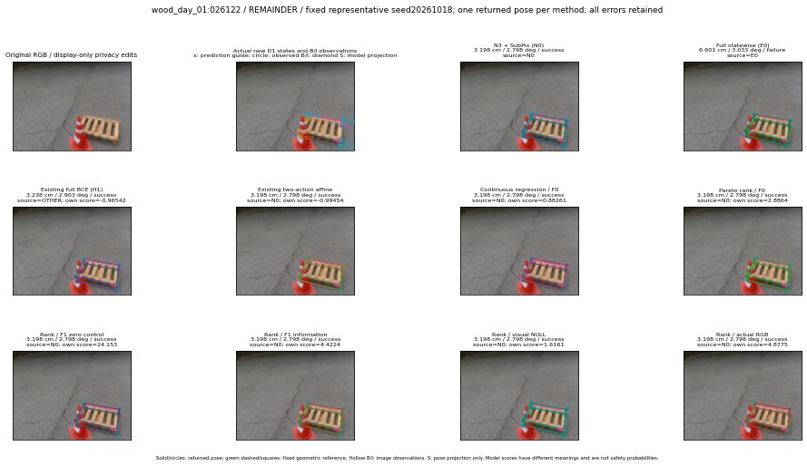

실선은 반환 자세, 초록 점선은 고정 기하 참조입니다. S는 영상 관측이 아닙니다. 점수는 모델별 의미가 다르며 보정된 안전 확률이 아닙니다. 개인정보 처리는 표시 사본에만 적용했습니다.
| 방법·seed | 위치 / 회전 / 공동성공 | 실제 출처 | 선택 후보 | 각 모델 자체 점수 |
|---|---|---|---|---|
| N0 | 3.198 cm / 2.798 deg / success | N0 | N/A | N/A |
| E0 | 6.601 cm / 3.033 deg / failure | E0 | N/A | N/A |
| E0_REGENERATED | 6.601 cm / 3.033 deg / failure | E0 | E0_REGENERATED | N/A |
| POSEFIX_SUBPIX_PF_ANCHOR | 5.14 cm / 3.983 deg / failure | OTHER | N/A | N/A |
| POSEFIX_SUBPIX_YOLO_ANCHOR | 5.14 cm / 3.983 deg / failure | OTHER | N/A | N/A |
| D1_H1_MLP_s20261018 | 3.238 cm / 2.903 deg / success | OTHER | G10/ORIGINAL_WD/selected | -0.9654213190078735 |
| D1_H1_MLP_s20261019 | 3.238 cm / 2.903 deg / success | OTHER | G10/ORIGINAL_WD/selected | -1.2458841800689697 |
| D1_H1_MLP_s20261020 | 3.238 cm / 2.903 deg / success | OTHER | G10/ORIGINAL_WD/selected | -1.2775399684906006 |
| D1_H1_PAIR_MLP_s20261018 | 3.198 cm / 2.798 deg / success | N0 | N0 | -1.7776159048080444 |
| D1_H1_PAIR_MLP_s20261019 | 3.198 cm / 2.798 deg / success | N0 | N0 | -1.7025117874145508 |
| D1_H1_PAIR_MLP_s20261020 | 3.198 cm / 2.798 deg / success | N0 | N0 | -1.8110566139221191 |
| D1_H1_PAIR_ROLE_AFFINE_s20261018 | 3.198 cm / 2.798 deg / success | N0 | N0 | -0.9945432543754578 |
| D1_H1_PAIR_ROLE_AFFINE_s20261019 | 3.198 cm / 2.798 deg / success | N0 | N0 | -0.942287027835846 |
| D1_H1_PAIR_ROLE_AFFINE_s20261020 | 3.198 cm / 2.798 deg / success | N0 | N0 | -0.729794442653656 |
| R_CONT_F0_s20261018 | 3.198 cm / 2.798 deg / success | N0 | N0 | 0.8826123476028442 |
| R_CONT_F0_s20261019 | 3.198 cm / 2.798 deg / success | N0 | N0 | 0.8322843313217163 |
| R_CONT_F0_s20261020 | 2.135 cm / 3.717 deg / success | OTHER | WD0/ORIGINAL_WD/selected | 0.9658403396606445 |
| R_ORDER_F0_s20261018 | 3.198 cm / 2.798 deg / success | N0 | N0 | 2.8863868713378906 |
| R_ORDER_F0_s20261019 | 3.198 cm / 2.798 deg / success | N0 | N0 | 6.209237098693848 |
| R_ORDER_F0_s20261020 | 3.238 cm / 2.903 deg / success | OTHER | G10/ORIGINAL_WD/selected | -8.036487579345703 |
| R_ORDER_F1_ZERO_s20261018 | 3.198 cm / 2.798 deg / success | N0 | N0 | 24.152645111083984 |
| R_ORDER_F1_ZERO_s20261019 | 3.198 cm / 2.798 deg / success | N0 | N0 | 16.211036682128906 |
| R_ORDER_F1_ZERO_s20261020 | 3.198 cm / 2.798 deg / success | N0 | N0 | 10.218483924865723 |
| R_ORDER_F1_s20261018 | 3.198 cm / 2.798 deg / success | N0 | N0 | 4.422423839569092 |
| R_ORDER_F1_s20261019 | 3.198 cm / 2.798 deg / success | N0 | N0 | 4.990031719207764 |
| R_ORDER_F1_s20261020 | 3.198 cm / 2.798 deg / success | N0 | N0 | 1.395859956741333 |
| V_ORDER_NULL_s20261018 | 3.198 cm / 2.798 deg / success | N0 | N0 | 1.6161388158798218 |
| V_ORDER_NULL_s20261019 | 3.198 cm / 2.798 deg / success | N0 | N0 | 0.6057095527648926 |
| V_ORDER_NULL_s20261020 | 3.198 cm / 2.798 deg / success | N0 | N0 | 2.842249870300293 |
| V_ORDER_RGB_s20261018 | 3.198 cm / 2.798 deg / success | N0 | N0 | 4.877471923828125 |
| V_ORDER_RGB_s20261019 | 3.198 cm / 2.798 deg / success | N0 | N0 | 1.2091175317764282 |
| V_ORDER_RGB_s20261020 | 3.198 cm / 2.798 deg / success | N0 | N0 | -3.7306361198425293 |